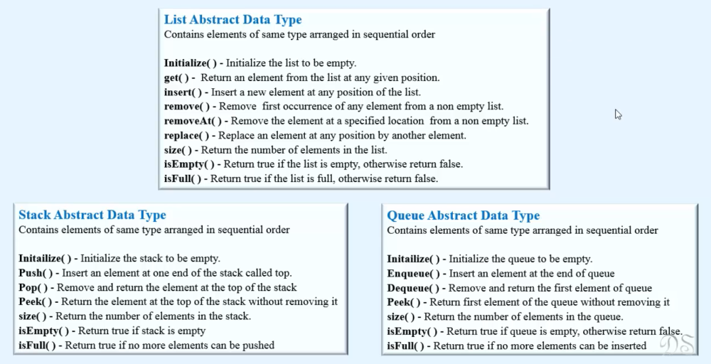

Abstract Data Types(ADT)
What is Abstract Data Types ?
(Mathematical/Logical/views)> It is just a Concept/idea/mathematical model/abstract model/interface which has just definitions of data types logically, so that each data types operates on same DATA ,OPERATIONS(behaviours) and has same NAME derived from its behaviour which is same accross all programming language .They do not have physical existence in the memory. Memory only stores 0's and 1's.
> While Defining those ADT, Different programming launguage implements them in their own way but behaviour will remain same.
Examples: array,linked list, stack, queues,trees,graphs, hashing etc.
> Stack can be implemented either using arrays or linked list or any other ways but behaviour(methonds) will remain same which means in any Programming language stack has behaviours like push, pop etc.
> It includes set of data and operations that can be performed on it and always remains same.
> Abstract data Types can also be considered ad CUSTOM_DATA_STRUCTURES
> Examples: List, Stack, Queue.

> They are abstract because only Logically/Conceptually we know WHAT they do but we are unknown about HOW they are performing operation in the
physical memory whether they have been implemented using array or linked list or some other data structure. We also don't what logic does their methods are using.
Abstract Data Type VS Data Structure
1. Abstract data types is a logical representation of data whereas Data Structure is the actual representation of data which do exist in the memory like array, linked list etc.
2. Abstract data type tells WHAT TO DO and Data Structure tells HOW TO DO.